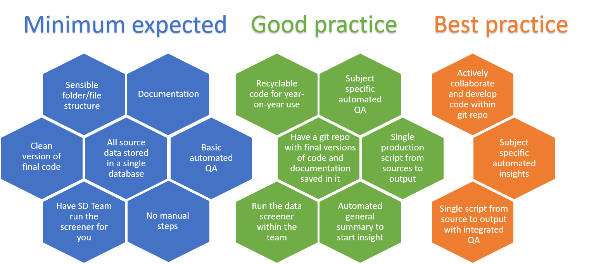

RAP Guidance for Statistics Producers
What is RAP
Reproducible Analytical Pipelines, or RAP for short. The full words still hide the true meaning behind buzzwords and jargon though. What it actually means is using automation to our advantage when analysing data, and this is as simple as writing code such as a SQL query that we can click a button to execute and do the job for us.
We already have ‘analytical pipelines’ and have done for many years. The aim of RAP, is to automate the parts of these pipelines that can be automated, to increase efficiency and accuracy, while creating a clear audit trail to allow analyses to easily be re-run if needed. This will free us up to focus on the parts of our work where our human input can really add value. RAP is something we can use to reduce the burden on us by getting rid of some of the boring stuff, what’s not to like!
Our scope
We want to focus on the parts of the production process that we have ownership and control over – so initially we are focussing just on the process from data sources to underlying data files. This is the part of the process where we can see the potential for RAP to add the most value - automating the production and quality assurance of our outputs currently takes up huge amount of analytical resource, which could be better spent providing insight and other value adding activity.
In Official Statistics production we are using RAP as a framework for best practice when producing our published underlying data files, as these are the foundations of our publications moving forward. This will help us to improve and standardise our current production processes and to provide a clear ‘pipeline’ for analysts to follow. This will have the added benefit of setting a clear and defined world of tools and skills required, making learning and development that much clearer and easier. To get started with RAP, we first need to be able to assess what it actually means in practice, and be able to assess our own work against that - assessing my work against RAP.
Implementing RAP for us will involve combining the use of SQL, R, and clear, consistent version control to increase efficiency and accuracy in our work. For more information on what these tools are, why we are using them, and resources to help upskill in thoses areas, see - what tools I will need to use
The collection of, and routine checking of data as it is coming into the department is an area that RAP can be applied to, but we have kept this out of scope at the moment as the levels of control in this area vary wildly from team to team. That being said, if you would like advice and help to automate any particular processes, feel free to contact cameron.race@education.gov.uk.
What we need to do
Teams will start from different places and implement changes at different rates, and in different ways. We do not expect that every team will follow the same path, or even end at the same point.
Teams are expected to review their own processes and use the guidance on this site to start making improvements towards meeting the four core principles if they aren’t already.
Core principles
Regardless of how it is implemented, the goal is that we should be using the guidance on this site to ensure our production processes meet the following key principles, and in turn, free us up to focus on the fun stuff:
Data sources for a publication are stored in the same database - Getting source data together
Underlying data files are produced using code, with no manual steps - Using automation to process data
Files and scripts should be appropriately version controlled - Using version control
There should be basic automated quality assurance applied to outputs - Using automated QA
Where I need to focus
Most teams have already made progress with their production of tidy data files, and the release of the automated screener has now tied up that end point of the pipeline that we are all currently working towards. The standard pipeline for all teams will roughly resemble this:

The key now is for us to build on the work so far and focus on how we improve the quality and efficiency of our production processes up to that point. To do this, we need to make a concerted effort to standardise how we store and access our data, before then automating what we can to reduce the burden of getting the numbers ready and see the benefits of RAP. The exact meaning of this will vary within teams.
RAP process checklists
The diagram below highlights what RAP means for us, and the varying levels in which it can be applied. The general expectation is that all teams will have shifted towards the minimum implementation of RAP by the end of their next production cycle. It’s worth acknowledging that some teams are already working around good and best practice levels.

Below are checklists designed to make reviewing our processes based on the graphic above easier, giving a straightforward list of things to check our work against. This will flag areas that require improvement, once we know what it is we need to address at a publication level, we can then use the sidebar to go to the specific section with more guidance on how to get there.
Minimum expected
Do I have a sensible folder and file structure? - Explanation and links
Do I have suitable documentation? - Explanation and links
Are my underlying data files screened against the standards? - Explanation and links
Is all of my source data stored in a single SQL database? - Explanation and links
Do I have a clean final version of the code used to produce my data? - Explanation and links
Do I use the basic level of automated QA? - Explanation and links
Do I produce my data with no manual steps? - Explanation and links
Good practice
Do I have recyclable code that can be used year-on-year? - Explanation and links
Do I have a git-controlled repo with final versions of code and documentation saved in it? - Explanation and links
Is the data-screener run within my own team? - Explanation and links
Do I use a single production script to get from source data to underlying data? - Explanation and links
Do I use publication-specific automated QA? - Explanation and links
Do I use automation to produce summary reports of my data? - Explanation and links
Best practice
Does my team actively collaborate and develop code in a git-controlled repo? - Explanation and links
Do I use a single production script to get from source to underlying data, with intergrated QA and summary reports? - Explanation and links
Tools and learning resources
We are happy for people to use whatever tools they want, as long as the proccesses meet the principles of RAP.
However, we’re developing resources to help you begin on your own RAP process. Below are the recommended tools to use that will be the easiest to pick up, and will be supported with resources for developing the necessary skills to use them. These are also the tools that have the largest user communitites in DfE, and are already working in our current IT setup.
Recommended tools
Microsoft SQL Server - Database management - SQL servers are where most of DfE’s data is held, and with a wide usage community already in place and a language/interface that is pleasantly intuitive and easy to use, it is an obvious choice for this task. Moreover, SQL allows us to carry out a lot of data manipulation and basic analysis that meets the entire needs of some publications.
R - Data manipulation and analysis - We recommend to use R where SQL can’t do everything that you need in terms of manipulation and analysis as it already has a strong community within DfE, it can pull in data stored in SQL servers and integrate SQL queries, as well as becoming a standard language in the world of statistics and data.
Git - Version control - Version control can be implemented through having a sensible folder structure and file naming conventions, however we do recommend that in the long run we move towards to using Git. It is widely used across DfE and integrates neatly with Azure DevOps, as well as being the current leading version control software in the world of coding. (Add the citation here)
Learning these tools
We are developing targeted resources for each of these tools for RAP in order for you to have the skills needed to persue your very own RAP. Below is a quick list of some of the available L+D resources for SQL, R, and Git (there’ll be many more just a google away!).
R
The DfE Data Science resource tool, in here you can access a plethora of materials, from coffee and coding talks to online guidebooks.
We’ve produced the DfE R training guide, which is aimed at giving users a good introduction into how to get started with using R and RStudio. This can be used as a stand-alone document or in conjunction with a taught course led internally at DfE by Tom Franklin, Adam Robinson, Laura Selby or another available analyst.
Within DfE we also have the Analytics Academy, who host an online R training course.
We recently had our Data Science week, which contained a wide variety of talks across Data Science within the department, everything was recorded and can be found on the microsoft stream page.
R Markdown: The Definitive Guide, hopefully this one should be relatively self-explanatory!
General
There is also a fantastic general data science resources list, that includes plenty of things for R and SQL, with Python, Git, and shell included in there too!
How to name files - general good practice with naming conventions
SQL solution for characteristic/characteristic group
Data-screener video
Other generalisable code?
Zach Waller has produced guidance of how to use git in Azure DevOps (formally VSTS), which aims to give a very detailed guide on how to use version control software with use in the production of official statistics.
You should also ensure that your data follows the GSS Standards on symbols.
And the last one for now is StyleR, less L+D and more a nifty package that helps you to standardise and style your R code in line with tidyverse formatting rules to make it easier to read and reuse for others.
In general there is a widening knowledge of the methods within SQL and R that are commonly used to process the data in this format, so we recommended asking around production teams if you hit specific issues or want general advice on what experienced when changing their production processes. There is an ever growing list of teams that have their data aligned with the standards already, so you’ll never be too far away from someone who has already done something similar.
Finally, if you are stuck at all, have any questions, or even just want a second pair of eyes to double check something, email cameron.race@education.gov.uk.
Getting your data together in SQL
Assumptions
The process starts with clean datasets which hold data in the ‘rawest form’ and have been deemed fit for purpose by the production team. RAP can play a part in that data cleaning process but is out of scope here.
Teams may then have to manipulate that data, to varying degrees, before they can create their tidy data files in line with the tidy data guidance. This process should be saved as code, avoiding any manual steps.
Then teams create tidy data files, ideally using one script per output file. Any metadata files would also need to be produced.
Teams should use appropriate version control of files to keep track of their outputs.
Why is this so important?
The first place to start for your teams RAP is to store the raw data you use to create underlying data in a Microsoft SQL Server database. This is similar to a sharepoint area or a shared folder, but it’s a dedicated data storage area which allows multiple users to use the same file at once, and for you to run code against the data in one place.
Why use SQL Server?
SQL stands for Structured Query language and is a scripting language, which asks physical servers at a DfE site to process data.
In order for us to be able to have an end-to-end data pipeline where we can replicate our analysis across the department, we should store all of the raw data needed to create aggregate statistics in a managed Microsoft SQL Server. This includes any lookup tables and all administrative data from collections prior to any manual processing. This allows us to then match and join the data together in an end-to-end process using SQL queries.
SQL is a fantastic language for large scale data joining and manipulation; it allows us to replicate end-to-end from raw data to final aggregate statistics output. Having all the data in one place and processing it in one place helps us in auditing our work and ensuring reproducability of results.
How to set up a SQL working area
More to follow.
How to get your data into SQL
More to follow.
Copying data from iStore
More to follow.
Uploading data to SQL Server
There’s lots of guidance online of how to import flat files from shared areas into Microsoft SQL server on the internet, including this guide. It’s important to upload them with consistent, throught-through naming conventions.
How to grant access to your area
More to follow.
Using code to process data
More to follow.
Something in here about using code
It is as simple as telling your computer what to do. Like in SPSS where you write the syntax. Talk about the benefits of it.
Any particular useful things to know - use sensible variable names.
General good practice around writing code.
Producing tidy underlying data in SQL
Any particularly useful tips specific to SQL.
- Data tidying tutorial in SQL, this is a SQL query that you can run on your own machine and walks you through the basics of tidying a simple exmample dataset in SQL.
Connecting R to SQL
- In here there will be things.
Tidying and processing data in R
Hadley wickham video
Other useful things?
Further resources
More to follow.
Version control
More to follow.
Naming conventions
Using those slides found a while back.
Folder structures
Something in here that is useful.
Documentation
Linking to this from the checklist.
Version control software
More to follow.
Introduction to git
More to follow.
How to setup an azure devops area
Some text. Probably worth also pointing people towards how to set up a repo in prep for the following section.
How to use git in practice
Some more text, probably include something around collaboration too.
Automated QA
Any data files that have been created by the team will need to be quality assured. This should include sense checking the data as well as checking its accuracy. These checks should be automated where possible, so the computer is doing the hard work, but also to ensure their reliability.
The Statistics Development Team will provide generalised code that teams can use as a starting point for automated QA and they should run this as a minimum as part of their pipeline, they can then choose to add more area specific checks to the script and/or continue with current checking processes in tandem.
It is assumed that when using R, automated scripts will output html reports that the team can read through to understand their data and identify any issues.
Recommended generic checks
Examples…
Examples of this in practice
Examples…
Example code
Include example code here.
Automating summary statistics
Add something here about this.
Data-screener
The final part of quality assurance for underlying data files, will be to check that they meet the standards that have been agreed upon. Once teams have quality assured the data files, they can then run them through the data screener to check they meet the standards required for the EES platform. This forms the final part of the automated QA process.
The screener outputs a .html report that we can read through to make sure all checks have passed. If any checks fail, teams should make the required changes to the data (potentially running full QA again) and then re-run the screener. If all the screener checks pass, and only if they all pass and the report shows 100%, the file is then ready to be loaded into the EES platform.
The data-screener can found on GitHub, and from there can be either downloaded or cloned. A tutorial video has been made to walk you through the initial set-up and use of the project.